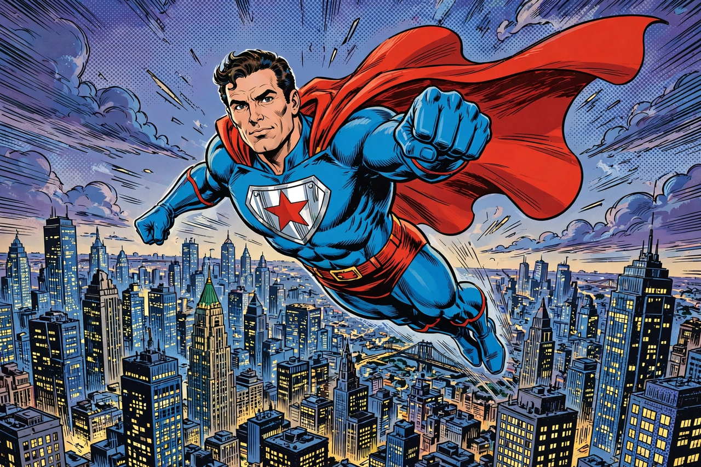

Superman
| Superman | |
|---|---|
| First appearance | Action Comics #1 (1938) |
| Created by | Jerry Siegel and Joe Shuster |
| Alter ego | Clark Kent (born Kal-El) |
| Place of origin | Krypton |
| Affiliations | Justice League; Daily Planet |
| Abilities | Flight, superhuman strength and speed, invulnerability, heat vision, X-ray vision, freeze breath |

Superman is a superhero appearing in American comic books published by DC Comics. Created by writer Jerry Siegel and artist Joe Shuster, two teenagers from Cleveland, Ohio, he debuted in Action Comics #1 (cover-dated June 1938) and became the archetype of the superhero genre, as well as one of the most recognisable fictional characters in the world.
Origin and character
Born Kal-El on the planet Krypton, the infant Superman was rocketed to Earth by his father Jor-El moments before Krypton's destruction. Found and raised by farmers Jonathan and Martha Kent in Smallville, Kansas, he grew up as Clark Kent, developing extraordinary powers under Earth's yellow sun. As an adult he works as a reporter for the Daily Planet in Metropolis, alongside journalist Lois Lane, and fights for "truth, justice and a better tomorrow" against adversaries including the industrialist Lex Luthor.
Powers and weaknesses
Superman's powers — flight, immense strength, invulnerability, super-speed, heat vision, X-ray vision and super breath — expanded considerably over his early decades. His principal weaknesses are kryptonite, radioactive fragments of his home world; magic; and the light of a red sun, which removes his powers. His costume of blue, red and yellow, with a stylised "S" shield (later explained as the Kryptonian crest of the House of El) on his chest, became an enduring pop-cultural icon.
Publication history
Superman's success created the comic book superhero industry, leading to radio serials, film serials, the 1950s television series starring George Reeves, and the landmark 1978 film Superman starring Christopher Reeve. The character has been repeatedly reinterpreted, notably in John Byrne's 1986 reboot The Man of Steel, the 1992–93 "Death of Superman" storyline, and numerous films, animated series and the 2025 film Superman directed by James Gunn. Copyright and creator-rights disputes between DC and the Siegel and Shuster estates ran for decades and reshaped industry awareness of creators' rights.
Cultural impact
Superman is frequently described as one of the greatest and most influential fictional heroes; his debut is conventionally taken as the beginning of the superhero genre, earning him epithets including the Man of Steel and the Man of Tomorrow. The character has been read as an immigrant allegory, a New Deal-era champion of the oppressed, and an embodiment of American ideals, interpretations that have shifted with each era of publication.